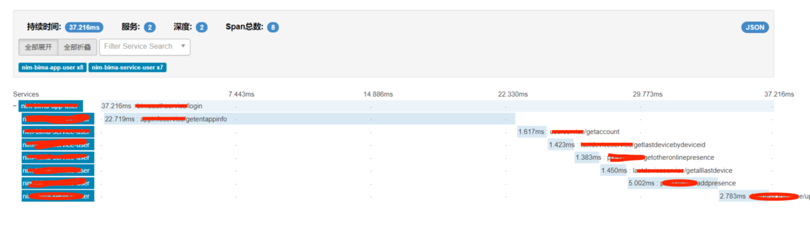
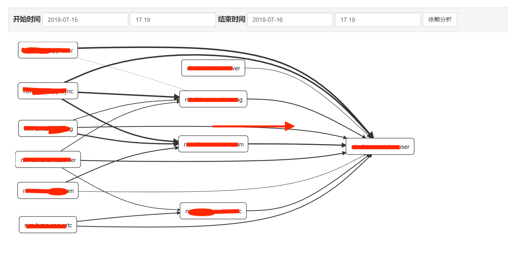

分布式调用追踪系统Zipkin集成
首先给出demo地址，有问题也可以直接看代码。https://github.com/licheng-xd/dubbo-sleuth
准备
sleuth是springcloud对zipkin接入的封装，从2.0开始直接采用了brave提供的zipkin接入实现。
由于sleuth对dubbo的支持是从2.0开始的，所以一咬牙直接把整个项目升级成了springboot2.0，springboot2.0和springboot1.x有很多不兼容的地方，这里就不一一细说了，同时springboot升级到2.0以后，dubbo也必须要从0.1.0升级到0.2.0（Apache旗下的dubbo版本），整个过踩坑踩了一个星期。
因为springcloud的微服务框架是基于http构建的，所以sleuth默认是只支持http。在2.0版本中提供了对dubbo的支持，其实看一下源码就知道，就只是一个DubboFilter。后面实现自己的rpc接入sleuth就是参考了它的实现。zipkin本身支持多种collector和storage，默认采用异步http的collector，存储默认在内存中。考虑到对应用本身的性能影响，我们采用kafka来做collector，最大程度的解耦以及减少性能影响。存储选用es，用mysql的话当数据量较大时会影响zipkin-server的查询速度。
本地测试环境部署：
本地采用vagrant管理开发环境，在debian的虚拟机中装好，zookeeper，kafka，es，其中es建议用docker镜像直接运行，不需要修改很多系统参数。
启动zipkinserver，采用kafka-collector和es-storage。
我本地的vagrant虚拟机ip是192.168.100.101，首先下载zipkin-server，启动命令：
项目添加sleuth依赖
由于采用kafka作为collector所以需要原来spring-kafka，同时添加了brave-dubbo的依赖。
配置
|
|
dubbo服务和消费端都需要加上对应的tracing filter
|
|
扩展
自研RPC通过filter接入sleuth追踪。filter逻辑的核心在于filterchain的实现，而filterchain的核心逻辑其实就是一个链式的递归调用：
然后通过实现filter来加入追踪功能
|
|
小技巧：通过tracer.currentSpan().context().traceIdString();把tracing中的traceid拿出来放到业务日志中，结合elk日志收集可以非常容易定位问题。
结果
可以从zipkin的数据分析中清楚的看出来整个请求中的rpc调用链，以及每次rpc消耗的时间。

依赖分析
你会发现依赖分析页面没有数据。对了，只有当数据在内存中存储的时候，zipkin-server才能直接分析出调用依赖关系。当采用外部存储的时候，就需要单独的依赖分析来实现了。下载zipkin-dependencies.jar并在crontab中创建定时任务，定时对存储数据进行分析，这样就可以看到依赖关系了。

奇怪的小问题
用于引入了springcloud-sleuth，而springcloud会在进程启动时启动一个自己的bootstrap context，作为当前应用ApplicationContext的父ApplicationContext，由于每初始化一个ApplicationContext就会加载一遍spring.factories配置文件中的ApplicationListener，所以配置在spring.factories中的listener都会被执行两次。因此dubbo的WelcomeLogoListener会被执行两次。
使用feign作为http客户端时，build传入的client必须是spring的bean，否则sleuth无法做拦截。